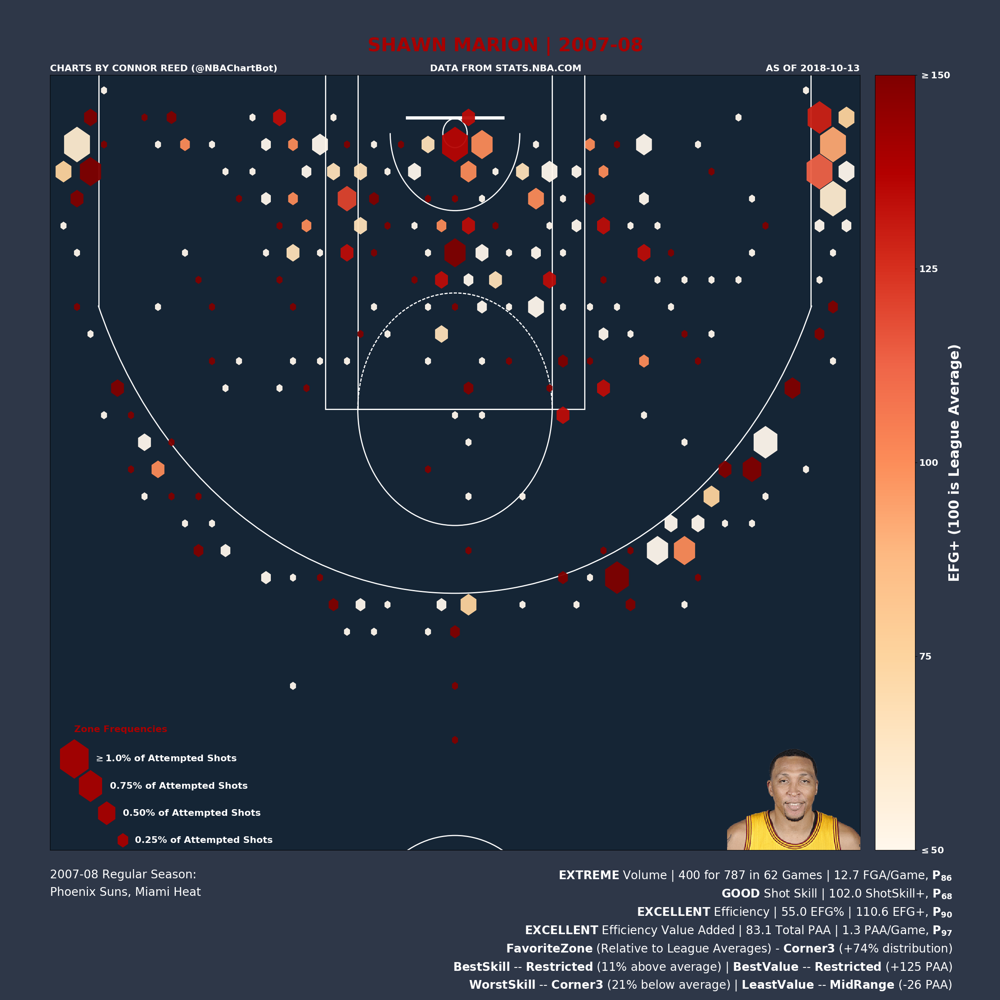
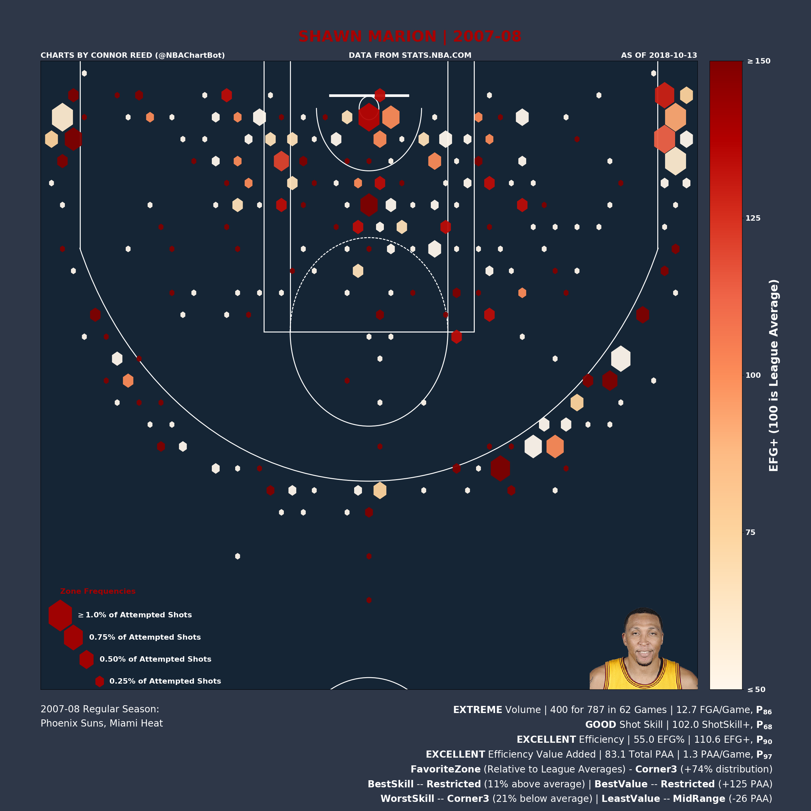

NBA Shot Charts - 2018 Update
October 15, 2018
Partially updated: December 10, 2018
"Oh that's nice" - Teddy Rendahl.
Recall back in early 2017 I released my first shot chart post. Well, after a year and a half and with some free time on my hands after returning from my trip to Africa, I figured it was time to make some much needed updates to the ol' shot chart machine and accompanying Twitter bot as I am now (slightly) less dumb, (slightly) more compotent, and have a (slightly) better understanding of the NBA, or I at least hope (at least one of) these things are true.
Index
If you've only come to look at pretty pictures, then click here for all player charts or click here for all team charts. If you'd like to read on, this post is divided into a few sections, follow any links to jump to that portion of the write-up.
- Example and Description of a Single Chart
- Examples of a Few Player Types
- High Skill - High Efficiency
- Low Skill - High Efficiency
- High Skill - Low Efficiency
- Low Skill - Low Efficiency
- Description of Metrics
- Historical Leaderboards (since 1996)
- Notable Limitations
- Ideas for Future Work
Example and Description of a Single Chart
(back to index)
To best describe these charts, we will use a labeled example chart, and explain the significance of each label. For the example, let's use what is arguably the greatest single season shooting effort in NBA history, Stephen Curry's breath-taking, earth-shaking, record-breaking, history-making 2015/16 season.

The first thing to notice about this chart is how ridiculous of a season it was. It is easily the top PAA season in my database, worth 405.9 PAA; 86.2 points higher than the next best season, which is more than the difference between second place (Shquille O'Neal's 1999/2000 season) and the 11th best season on record. What's also astonishing is that Curry did this primarily via outside shooting while most of the other top seasons are from guys who can dominant the paint (primarily Shaq). The top-15 best seasons by this metric contain the following names: Shaquille O'Neal (6 seasons), LeBron James (2 seasons), Stephen Curry (2 seasons), DeAndre Jordan (2 seasons), and a single season each from Peja Stojakovic, Amar'e Stoudemire, and Steve Nash.
Moving on, we notice seven labels (A through G):
A: This is the title of the chart. It appears fairly straightforward, but there is one unique aspect, the dark red color. This color corresponds to the player's EFG+ percentile with the higher the percentile, the darker the color. Since Curry's season was in the 100th percentile, his color is the as dark red as possible (on the other hand, a player in the 0th percentile, would have their name in white).
B: The date the chart was plotted, so it is possible to tell when a chart is out of date.
C: Key for the size of the hexagons. Similar to the title of the chart, the color of this key corresponds to the player's EFG+ percentile with the higher the percentile, the darker the color.
D: Color bar key. The color is again based on a player's EFG+ for each zone. For example, if a player shoots 40% from a 3-point zone, that zone will be darker red than a 40% 2-point zone.
E: A listing of the date-range that the chart and the teams the player played for over that range.
F: Percentiles for four categories; volume as measured by FGA/Game (Field Goal Attempts per Game), shooting skill as measured by ShotSkill+, efficiency as measured by overall EFG+, and efficiency value added as measured by PAA/Game.
G: A player's Favorite Zone as measured by z%+, Best/Worst Skill Zones as measured by zEFG+, and Best/Least Value Zones as measured by zPAA.
Examples of a Few Player Types
(back to index)Let's compare Curry's chart to other charts from that showcase a few different season types for high volume players (click on image to see full-size):
High Skill - High Efficiency
Three very different looking shot profiles, but all three were high usage players who finished in the 95th percentile or higher in terms of shot skill, efficiency, and value added.
LeBron James (2012/13) dominated with his finishing close to the basket to rack up 285 zPAA in the Restricted Area.
Peja Stojakovic (2003/04) destroyed every zone beyond the arc but was especially fond of the Corners, where he took 152% more shots than an average distribution (z%+).
Nikola Jokic (2016/17) used his soft touch to shoot 56% better than league average (zEFG+) in the typically awkward Non-Restricted Area of the paint.
Low Skill - High Efficiency
 

Smart shot selection boosts these players efficiency value, even while they were non-outstanding players by ShotSkill+. Personally, I like to think of these players as the basketball representation of Simpson's Paradox.
Quentin Richardson (2004/05) was a below average shooter (95 ShotSkill+, 41st percentile). Even in his most skilled zone (Above the Break 3), he was only 3% above the average NBA player. However, due to his shot selection (primarily shooting 3s and dunks/layups), he still managed to generate positive efficiency value for the season (0.4 PAA/Game).
Nicolas Batum (2011/12) was a skilled shooter (64th percentile by ShotSkill+), but produced upper echelon efficiency value (92nd percentile by PAA) by heavily favoring shooting from the Corner 3 zones (298 z%+).
Shawn Marion (2007/08) was similar to Batum in that he had above average skill (68th percentile by ShotSkill+), while generating tons of value (97th percentile by PAA). However, Marion generated his value with great skill finishing around the rim (111 zEFG+, 125 zPAA in the Restricted Area).
High Skill - Low Efficiency
An affinity for the Mid Range drags down the efficiency value for these players, all of whom are talented shooters.
DeMar DeRozan (2016/17) is the poster child for this group; 75th percentile in ShotSkill+, but his extreme favoring towards the two least valuable zones (Mid Range and Non-Restricted area of the paint) ruin his efficiency (28th percentile in EFG+). (NOTE: As mentioned below, my metrics will generally underrate players like DeRozan more than any other, due to most of his true value coming from free throws and volume scoring).
LaMarcus Aldridge (2013/14), you can basically copy and paste what was said about DeRozan and put it here for Aldridge. However, his efficiency has generally improved after moving to San Antonio, maybe the same will happen for DDR.
Jamal Crawford (2016/17), even at 36 years old, Crawford was still an extremely talented player (111 ShotSkill+, 92nd percentile). Unfortunately, his shot selection hadn't adapted to the more efficient modern NBA (93 EFG+, 30th percentile).
Low Skill - Low Efficiency
Generally, players in this class can be described as "chuckers" and would have been better off taking a lower volume of shots.
Emmanuel Mudiay (2015/16) had a terrible rookie season. He failed to generate positive efficiency value from a single zone (his Best Value Zone was worth -9 zPAA).
Josh Smith (2013/14) managed to negate all value he created with his above average finishing in the restricted area by chucking up bricks from every other zone on the court.
Andray Blatche (2010/11). It's rare for a big man to below below league average at finishing in the Restricted Area, but Blatche managed to do this, finishing with a 98 zEFG+ in his Best Skill Zone.
Description of Metrics
(back to index)EFG+
Effective Field Goal Percentage Plus is an index metric comparing a player's Effective Field Goal Percentage to the league average, where 100 is average. An EFG+ of 125 is 25% better than league average, while an EFG+ of 75 is 25% worse than league average.
PAA and PAA/Game
Points (Added) Above Average is a basic measure of the number of points a player has added via his shooting. The general formula is Efficiency x Volume.
ShotSkill+
Shot Skill Plus measures the amount above or below league average a player performed at shooting given his shot profile, where 100 is average. A ShotSkill+ of 125 means that a player made 25% more shots than we would expect an average player to make given the same shots.
z%
Zone Percentage is the percentage of shots a player takes from a given zone.
z%+
Zone Percentage Plus compares the a player's distribution of shots to league average, where 100 is average. A z%+ of 125 from a zone means that a player's distribution of shots featured 25% more shots from that zone than the league average distribution.
zEFG+
Zone Effective Field Goal Percentage Plus compares a player's shooting percentage in a zone to league average, wher 100 is average. A zEFG+ of 125 from a zone means that a player was 25% better than league average at shooting in that zone.
zPAA
Zone Points (Added) Above Average measures how many points added or subtracted a player has added via his shooting in that zone. Most players will have positive zPAA in the efficient zones (notably the Restricted Area and Corner 3) and negative zPAA in inefficient zones (notably the Mid Range).
Historical Leaderboards (since 1996)
(back to index)I have leaderboards for the statistics I created. If there's a statistic not on here that you'd like to see, or you have a specific data request, feel free to e-mail me.
- Player Playoff Leaders (career)
- Player Playoff Leaders (season)
- Player Preseason Leaders (career)
- Player Preseason Leaders (season)
- Player Regular Season Leaders (career)
- Player Regular Season Leaders (season)
- Team Playoff Leaders (season)
- Team Preseason Leaders (season)
- Team Regular Season Leaders (season)
You can also download any of this data as .csv from my github.
Dec.10, 2018 Update: I added a column for Points Above Replacement (and Points Above Replacement per Game), which does a better job of capturing volume for volume shooters. Replacement Level is set as the EFG% of the worst team in the season that season.
Notable Limitations
(back to index)Free Throws: My metrics and charts do not account for any value gained via drawing and shooting free throws. As a few notable players have demonstrated, this is a very valuable and repeatable skill.
Accounting for Volume: We know that in general, a player's efficiency declines as usage increases (an inverse Jevons Paradox if you will). My metrics don't account for this. Therefore, a high volume, slightly below average efficiency player will score very low by the PAA metric, even though we know them to be valuable offensively (think of players like Allen Iverson or Russell Westbrook).
Role/Positional Consideration: All averages and percentiles are based on the entire set of NBA players, instead of being divided up into groups by position or role. Therefore, it is very difficult for a small Point Guard to grade out as above average at finishing in the restricted area even if they are better than most other guards. It is similarly very easy for a plodding Center to be described as an above average finisher there, even if they are worse than most other big men.
Passing, Defense, Off-Ball Play, and More: There are obviously many other ways to contribute value on a basketball court, and none of them are considered by these metrics. If you're looking for a metric that is more all-encompassing, I would suggest checking out any of the Plus-Minus, On/Off, or WOWY based metrics.
Ideas for Future Work
(back to index)Custom Charts: I have a script that can generate "custom" charts, based on custom date-ranges, Pre-Season/Playoff shots, multiple players, etc. Unfortunately, it uses a lot of bad legacy code, takes a long time, and is not compatible with my newer suite of metrics. Hopefully I'll find to update this script during the season as it is especially fun to play around with during the playoffs.
Similarity Scores: I've always wanted to make some form of a similarity score to find the player's with the most similar shot profiles but it's never been my top priority so I haven't tackled it yet.
Gather Positional/Physical Data: Gathering data on a player's listed position and his physical profile would allow me to bin players based by bigs/wings/guards, or better, create a model to determine player roles when joined with their shot profile. This would allow for better comparisons and percentile baselines based on role.
Playoff/Pre-Season Charts: I have the data to automate the generate of pre-season and playoff charts, but I'm not sure if it's worth the computing energy. If this is something anybody is interested in, let me know and I'll set it up.
WNBA and G-League Charts: I have the API calls to get shot location data for the WNBA and G-League, but I never decided on the best method for data storage. Should I make new tables? Set up a new database? Just add in new fields that signify league? The best answer is probably new tables. Still, I haven't had the motivation to do this yet since I don't follow either league outside of the playoffs and occasional regular season game.
Improve the ShotSkill+ Model: Right now, the ShotSkill+ model is based on comparing a player's performance in each subzone to the NBA average. However, I could use a more predictive method based on shot distance/angle that would improve the model (the best method would be to get more data, such as nearest defender distance, nearest defender height/length, pre-shot player movement, pre-shot ball movement, etc.). However, I've left the model as is, using the idea that when compared to a better model, what I have right now was 10% of the work while capturing 90% of the signal.
As always, the code for all of the charting tools are available on github. Any further questions can be sent to me at connor.reed.92@gmail.com.